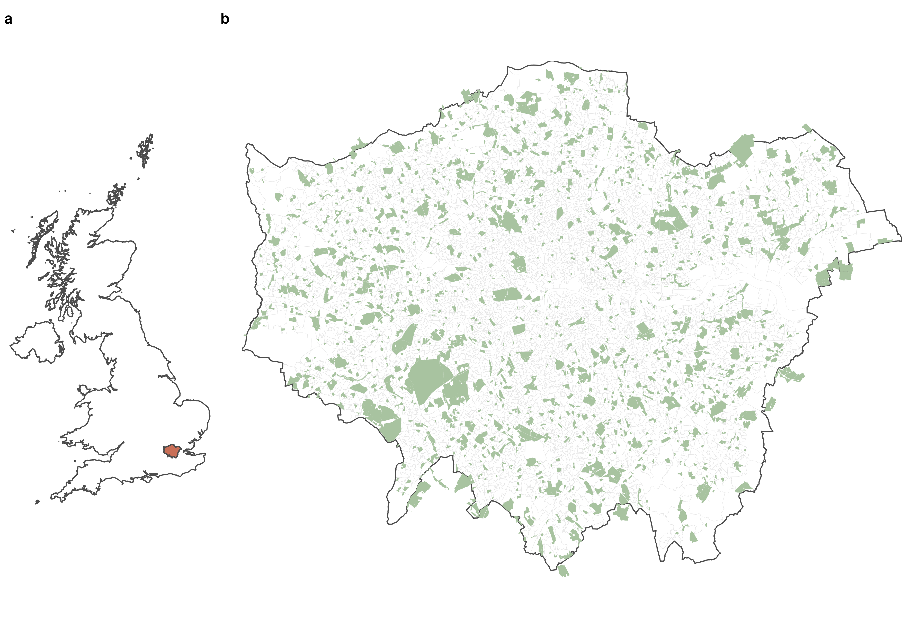
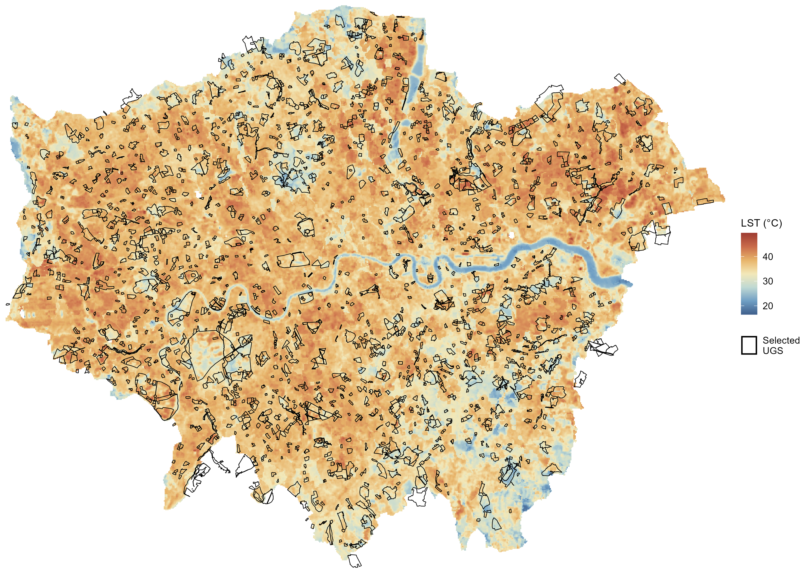
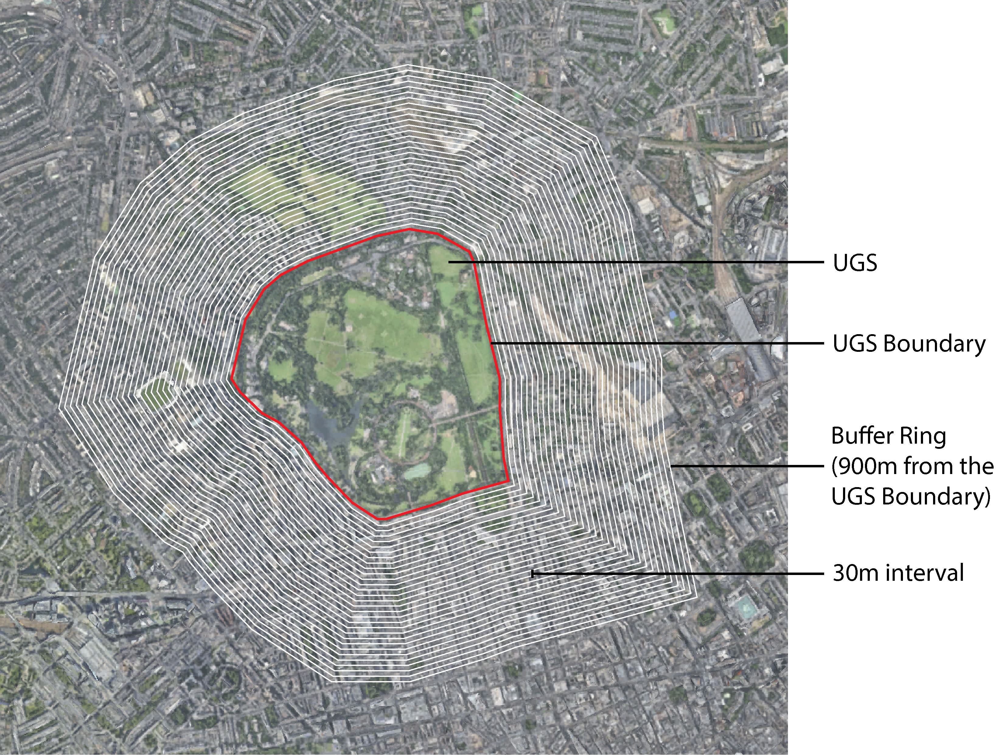
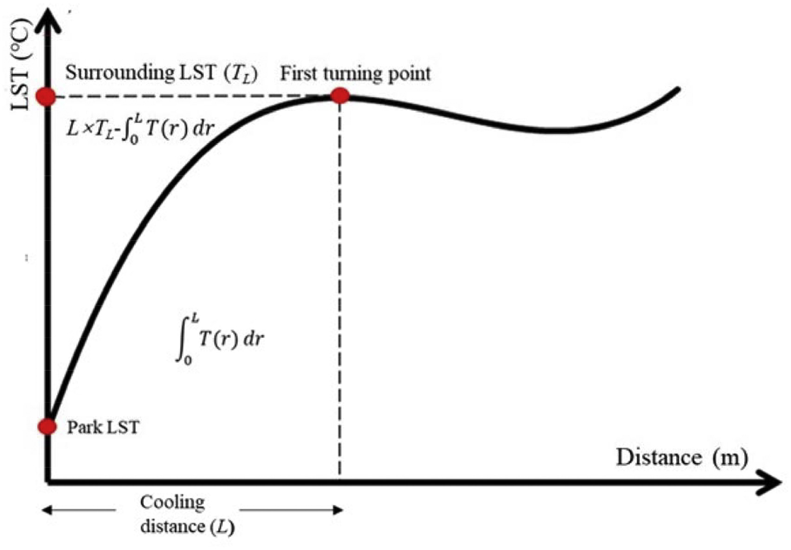
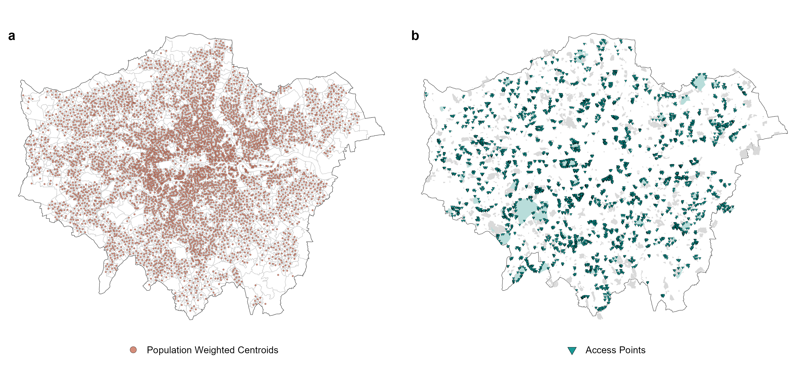
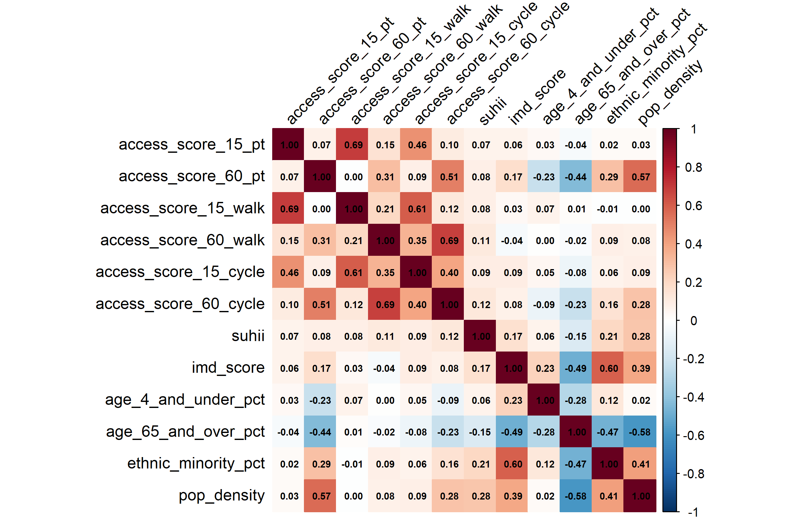

Chapter 3 Methodology
Previous section discussed the problem of urban heat and previous research findings on the topic. This section will outline the methodological approach for this study, following the study’s objectives to identify cooling-effective UGS and heat exposure across neighbourhoods (3.4), assess spatial distribution and multimodal accessibility of cooling-effective UGS as cooling opportunities (3.5), and examine accessibility equity across neighbourhoods in relation to patterns of heat exposure and socioeconomic deprivation (3.6).
3.1 Statement of Ethics
All data sources are secondary and are publicly available and accessible. Neither primary data collection nor individuals will be involved or identifiable in the analysis or outputs. This study recognises ethnicity data derived from Census 2021 as sociopolitical constructs rather than biologically founded categories when classifying ethnic minority groups. Also acknowledging the ecological fallacy, where neighbourhood-level findings from aggregated data should not be assumed to represent the characteristics and experiences of individuals residing in the studied areas (Firebaugh, 2001). Therefore, results are presented carefully, with clear acknowledgement of methods, assumptions and limitations in the following sections. Accordingly, this study is considered minimal risk and exempt from ethical approval. All sources are cited transparently and in accordance with any specified access conditions. The analysis was carried out using Google Earth Engine (GEE) and R (version 4.5.2). The main R-packages used in this study are enclosed in Table E1. Regarding reproducibility, the code used to conduct this analysis is available in this GitHub repository, including all figures presented in this study.
3.2 Study Area
This study focuses on Greater London, the capital of the United Kingdom (Figure 1). London has an expansive area of approximately 1,572 square kilometres, with a total population of 9,089,736 in 2024 (Office for National Statistics, n.d.a). It exhibits a spatially heterogeneous urban structure, with substantial variation in population density, demographics, employment, transportation connectivity, and socioeconomic diversity across both inner and outer London. Although around 20% of London is public green space, its provision is unevenly distributed, with access varying considerably across different neighbourhoods. This study therefore assesses UGS accessibility at Lower layer Super Output Areas (LSOA) level. LSOAs are small geographic statistical units, containing a residential population of approximately 1,000 to 3,000 each, with 4,994 LSOAs across London. UGS ≥ 2ha were included in this study as candidate sites, given their potential cooling capacity to serve as meaningful resources for communities (Almeida and Fonseca, 2025).

Figure 3.1: Study area of Greater London in the United Kingdom (a) with Census 2021 LSOA boundaries and featuring UGS ≥ 2ha as candidate sites for park cooling accessibility analysis (b)
3.3 Data and Research Workflow
This study follows a three-stage sequential analysis workflow where outputs from each stage inform the subsequent analysis as shown in Figure 2. Datasets used to produce this study were obtained from various open data platforms, including Earth observations, spatial, network and socio-economic and socio-demographic datasets (see Table 2).
![Methodology workflow overview. The methodological approach is divided into 3 stages, 1) quantifying heat exposure and park cooling indicators to identify cooling-effective and publicly accessible UGS as well as transforming their corresponding UGS access points into routing destination points for Stage 2. 2) involves building a multimodal transport network and conducting r5r routing between origin and destination pairs to derive travel time matrices for computing accessibility indicators. 3) presents the statistical approaches used to assess accessibility (in)equity and identify local spatial clustering patterns in relation to heat exposure and socioeconomic deprivation. Together, the outcomes are to inform urban heat policy and equitable access to green infrastructure for London.](general_images/Fig2_Methodology_Workflow.jpg)
Figure 3.2: Methodology workflow overview. The methodological approach is divided into 3 stages, 1) quantifying heat exposure and park cooling indicators to identify cooling-effective and publicly accessible UGS as well as transforming their corresponding UGS access points into routing destination points for Stage 2. 2) involves building a multimodal transport network and conducting r5r routing between origin and destination pairs to derive travel time matrices for computing accessibility indicators. 3) presents the statistical approaches used to assess accessibility (in)equity and identify local spatial clustering patterns in relation to heat exposure and socioeconomic deprivation. Together, the outcomes are to inform urban heat policy and equitable access to green infrastructure for London.
| Dataset | Source | Information Extracted | Purpose | Support |
|---|---|---|---|---|
| (A) Greater London boundary | Greater London Authority (2018) | Data used without modification | Used to define spatial extent of study area, to geographically filter study area for subsequent datasets | NA |
| (B) Lower layer Super Output Areas (December 2021) Boundaries EW BFC (V10) | Office for National Statistics (2024) | LSOA boundaries for Greater London | Provide neighbourhood level geography and units of analysis | Lee and van Dijk (2026) |
| (C) USGS Landsat-9 OLI/TIRS Level 2, Collection 2, Tier 1 | Earth Resources Observation and Science (EROS) Center. (2020) | LST acquisition products via the GEE platform | Retrieve LST for quantifying urban heat and park cooling metrics. | Li and Wang (2025) |
| (D) OS Open Greenspace (Polygons and Access Points) | Ordnance Survey (2026) | Greenspace polygons that intersect the Greater London boundary, providing location and extent of spaces that are considered accessible to public | Used to identify candidate cooling-effective UGS, filter for UGS functions and define as destination points for accessibility analysis | Creed and Carvalho (2024); Natural England (2026c); Smith et al. (2026a) |
| (E) OpenStreetMap Road Network Data for Greater London (PBF format) | Geofabrik and OSM Contributors (2025), extracts of April 04, 2026 | Data used without modification, a compulsory component for constructing r5r routing network | Provide the street network for building the multimodal routing network of r5r | Verduzco Torres and McArthur (2024); Lee and van Dijk (2026) |
| (F) Bus Timetable GTFS Data | Department for Transport (2026) | Scheduled bus services timetable in GTFS format, data used without modification | Provide a scheduled bus service timetable transport feed for public transport component of the r5r network | NA |
| (G) Rail Timetable Data | Rail Delivery Group (2026) | Scheduled rail timetable data, converted to GTFS format required to build r5r network | Provide a scheduled rail service (including Elizabeth Line and London Overgrounds) timetable transport feed for public transport component of the r5r network | NA |
| (H) Lower layer Super Output Areas (December 2021) EW Population Weighted Centroids | Office for National Statistics (2026) | Population weighted centroids for Greater London LSOAs | Used as origin points, representing residential population centroids for each LSOA | Sun et al. (2022); Lee and van Dijk (2026) |
| (I) English indices of deprivation 2025 | Ministry of Housing, Communities and Local Government (2025) | 2025 Indices of Multiple Deprivation Score (IMD score) at LSOA level | Used as neighbourhood-level socioeconomic deprivation indicator | Brousse et al. (2024), Krenz and Amann (2025) |
| (J) Census 2021 | Office for National Statistics (2021) | Extracted Population Density (TS006), Age by five-year age bands (TS007A), Ethnic Group (TS021) datasets | Used to derive neighbourhood-level indicators for representing population sensitivity and vulnerability | NA |
3.4 Quantifying Urban Heat and Park Cooling
LST was used to quantify urban heat exposure and cooling-effectiveness of UGS, through surface urban heat island intensity (SUHII) and PCI (as defined in Section 3.4.2). Landsat-9 RS imageries was searched for the summer months from June 01 to August 31, 2025 (UK Met Office, 2025). Upon retrieval, quality screening with QA_PIXEL bitmask was used to eliminate pixels contaminated by dilated cloud, cirrus, cloud, or cloud shadow. A total of 8 scenes were radiometrically calibrated by applying a scaling factor and an additional offset to convert the Digital Number (DN) into surface temperature in Celsius (\(T_{\text{Celsius}}\)) following the formula below (Li and Wang, 2025). The image collection was then reduced with pixel-wise median to obtain a representative summer median composite LST imagery illustrated in Figure 3.
\[\begin{equation} T_{\text{Celsius}} = DN \times 0.00341802 + 149.0 - 273.15 \tag{3.1} \end{equation}\]

Figure 3.3: Spatial distribution of LST, a summer median composite across study area. A summer median composite of LST across the study area (Greater London), featuring 1,837 UGS for this study are based on valid UGS polygons that situate within or intersects on the Greater London Boundary and of size ≥ 2ha.
3.4.1 Surface Urban Heat Island Intensity
To establish an indicator of neighbourhood-level heat exposure, the mean LST of each LSOA (\({\overline{LST}}_{i}\)) was differenced from the mean LST across the whole study area of London (\({\overline{LST}}_{\mathrm{other}}\)), where both values represent the mean of all LST pixels within their respective boundaries. The resulting intra-urban SUHII indicates the relative thermal deviation of each neighbourhood from the London mean. The formula as follows (MacLachlan et al., 2017; Hoffman, Shandas and Pendleton, 2020):
\[\begin{equation} \mathrm{SUHII}_{i} = \overline{\mathrm{LST}}_{i} - \overline{\mathrm{LST}}_{\mathrm{other}} \tag{3.2} \end{equation}\]
3.4.2 Park Cooling Effect
Cooling effects were assessed for 1,837 UGS ≥ 2ha1, following the exclusion of 31 non-polygon features (i.e. LineString and Points). Given that cooling effect is non-linear with distance and varies by different functions and conditions, cooling-effectiveness of UGS was assessed from an accumulative perspective using PCI and park cooling gradient (PCG) to account for spatial continuity (Peng et al., 2021). Considering the 30m spatial resolution of Landsat imagery and previous evidence that cooling distance limits within 900m from the UGS boundary (Peng et al., 2021; Du et al., 2022), thirty 30m wide buffers zones were created offset from each UGS boundary to quantify the spatial extent and magnitude of park cooling effects (see Figure 4).

Figure 3.4: Schematic diagram of cooling-effective UGS4F4F and thirty 30m intervals mean LST buffer rings from the UGS boundary to the furthest buffer ring at 900m to evaluate the cooling effect of candidate UGS sites. llustrated using Adobe Illustrator featuring Regent’s Park, London; adapted from Zhang, Zhang and Qi (2024)
The relationship between LST and distance (r) from the UGS boundary was modelled using a cubic polynomial function for deriving accurate fitting relationship at various distances as follows (Du et al., 2022):
\[\begin{equation} T(r) = ar^3 + br^2 + cr + d \tag{3.3} \end{equation}\]

Figure 3.5: Conceptual park cooling curve showing the fitted LST-distance relationship from Peng et al. (2021, p. 3). The first turning point (first local maximum) within 30-900 meters from the UGS boundary was identified as maximum cooling distance (L), with the fitted temperature at this turning point as the surrounding LST (\(T_{L}\)) where cooling influence from UGS diminishes beyond this point.
As identified by the fitted curve (illustrated in Figure 5), the maximum cooling distance (\(L\)) and its corresponding LST (\(T_{L}\)) will be used to calculate PCI and PCG. PCI is defined as the ratio of accumulated LST reduction within the maximum cooling distance, with higher PCI values demonstrating better cooling effect (Peng et al., 2021; Du et al., 2022; Xiong, Xie and Yang, 2024) PCG was calculated as the accumulated LST reduction by maximum cooling distance, with higher PCG values indicating stronger heat absorption capacities (Peng et al., 2021; Xiong, Xie and Yang, 2024). Both formulas are as follows:
\[\begin{equation} \mathrm{PCI} = \frac{L \times T_L - \int_{0}^{L} T(r)\,dr} {L \times T_L} \tag{3.4} \end{equation}\] \[\begin{equation} \mathrm{PCG} = \frac{L \times T_L - \int_{0}^{L} T(r)\,dr} {L} \tag{3.5} \end{equation}\]
where,
\(L\) = Maximum cooling distance
\(T_{L}\) = LST at maximum cooling distance
\(L\times T_{L}\) = Cumulative fitted LST within distance L
\(\int_{0}^{L} T(r)\,dr\) = Cumulative sum of the LST at each distance from the UGS boundary
\(L \times T_L - \int_{0}^{L} T(r)\,dr\) = Cooling LST of the UGS.
The following were considered for the identification of cooling-effective UGS, where UGS not meeting these criteria in reducing surrounding temperatures were excluded:
Valid cooling distance: maximum cooling distance (\(L\)) situated within 30-900 meters;
Maximum temperature reduction: the LST difference between LST at the maximum cooling distance (\(T_{L}\)) and the internal LST of UGS >0;
PCI: accumulated LST reduction within (\(L\)) as a ratio >0;
PCG: accumulated LST reduction divided by (\(L\)) >0.
Further considering for publicly accessible cooling-effective UGS, functions identified as Public Park or Garden and Playing Field are selected following the Accessible Greenspace Assessment (Natural England, 2026b). Other functions2 are not considered, as they are in many cases not publicly accessible, are not actual greenspaces or require paid access (Natural England, 2026b; Smith et al., 2026b). The identified cooling-effective UGS were then matched with their corresponding access points as routing destinations detailed in Section 3.5.
3.5 Multimodal Accessibility Modelling
Multimodal accessibility is measured by whether cooling-effective UGS (Section 3.4) are reachable by walking, cycling or a combination of all public transport modes included in timetable datasets (i.e. bus, rail) as described in Table 1. Travel times were estimated using the r5r package (version 2.4.0) for R, a door-to-door routing approach3 of origin-destination pairs (Figure 6) computed through the R5 multimodal open-source routing engine (Pereira et al., 2021). Routing parameter choices for computing travel time matrices is adapted from the Journey Time Statistics (Department for Transport, 2019) and informed by wider bodies of accessibility research, summarised in Table 3.

Figure 3.6: Origin-destination points to estimate travel time by PT, walking and cycling. LSOA Population weighted centroids as routing origin (a), cooling-effective UGS greenspace access points as routing destination (b) Origins comprise of population weighted centroids across 4,994 London LSOAs, where access points of the corresponding 602 identified cooling effective UGS that are featured as Public Park Or Garden, and Playing Field are used as destinations.
| Variable | Description | Value | Type | Support |
|---|---|---|---|---|
| origins, destinations | Routing origin (Table 2 data (H)) and destinations (defined in Section 3.4.) | Data frame containing columns of id, lon and lat | Points, with CRS WGS84 | Department for Transport (2019); Verduzco Torres and McArthur (2024); Lee and van Dijk (2026) |
| mode | Travel mode, to reflect travel patterns of London residents: combined public transport account for 28% of mode share and active travel for 40% | “TRANSIT”, “WALK”, “BICYCLE” | Character vector | Transport for London (2025) |
| departure_datetime | Date and time of travel, representing typical peak hour conditions | July 07, 2026 (Tuesday) | POSIXct object | Department for Transport (2019) |
| time_window | Departure time window, to account for schedule-based variations | 180 minutes (3-hour window) | Integer | Department for Transport (2019); Verduzco Torres and McArthur (2024) |
| max_trip_duration | Maximum travel time allowed a balance of capturing meaningful journeys while limiting unrealistic gaps, this may come to an expense of omitting potential longer journeys | 120 minutes | Integer | Department for Transport (2019); Verduzco Torres and McArthur (2024) |
| max_rides | Maximum number of transport mode changes | 3 | Integer | Lee and van Dijk (2026) |
| max_lts | Level of Travel Stress (LTS), a cycling LTS according to London’s wide implementation of 30km/h roads, with most roads falling into Level 2 of LTS | 2 | Integer | Williams et al. (2024); Jeong and Smith (2025) |
| walk_speed | Walking speed representing average walking speed of adults during dry, summer, road conditions | 5.15km/h | Numeric | Willberg, Fink and Toivonen (2023) |
| bike_speed | Bike speed | 12km/h | Numeric | Williams et al. (2024) |
Taking the median travel time presented in Table A1, two accessibility indicators were developed across each LSOA and mode. Minimum travel time to the nearest cooling-effective UGS access point is obtained as a descriptive measure for identifying spatial variations in access to the nearest cooling opportunity. Additionally, a cumulative opportunity accessibility measure is employed to account for the number of opportunities (each cooling-effective UGS as one cooling opportunity) one can reach from a given origin location within predefined 15- and 60-minute thresholds. Here, a 15-minute threshold represents local accessibility, while the 60-minute threshold captures wider opportunities, acknowledging that accessibility may extend beyond local scales (as per Section 2.3). The formula is displayed and detailed as below (Pereira and Herszenhut, 2023). The corresponding variable outputs used for subsequent analysis are summarised in Table 4.
\[\begin{equation} A_{i} = \sum_{j=1}^{n} O_j f(c_{ij}) \tag{3.6} \end{equation}\] \[\begin{equation} f(c_{ij}) = \begin{cases} 1, & c_{ij} \leq 15 \text{ or } 60 \text{ minutes} \\ 0, & \text{otherwise} \end{cases} \tag{3.7} \end{equation}\]
where,
\(A_{i}\) = Number of accessible cooling-effective UGS opportunities.
\(O_{j}\) = Cooling-effective UGS opportunities available at destination \(j\).
\(n\) = Total number of destinations.
\(f(c_{ij})\) = Binary decay function applied to the travel-time cost \(c_{ij}\), with thresholds of 15 or 60 minutes.
| Variable | Description | Type |
|---|---|---|
| PT | NA | NA |
| travel_time_min_PT | Minimum travel time to the closest cooling-effective UGS access point | Continuous (minutes) |
| access_score_15_PT | Cumulative opportunity of cooling-effective UGS within 15-minute | Count |
| access_score_60_PT | Cumulative opportunity of cooling-effective UGS within 60-minute | Count |
| Walking | NA | NA |
| travel_time_min_walk | Minimum travel time to the closest cooling-effective UGS access point | Continuous (minutes) |
| access_score_15_walk | Cumulative opportunity of cooling-effective UGS within 15-minute | Count |
| access_score_60_walk | Cumulative opportunity of cooling-effective UGS within 60-minute | Count |
| Cycling | NA | NA |
| travel_time_min_cycle | Minimum travel time to the closest cooling-effective UGS access point | Continuous (minutes) |
| access_score_15_cycle | Cumulative opportunity of cooling-effective UGS within a 15-minute | Count |
| access_score_60_cycle | Cumulative opportunity of cooling-effective UGS within 60-minute | Count |
3.6 Statistical Analyses
The statistical analysis for this study follows three complementary approaches of regression modelling with Generalised Linear Models (GLM) and Bayesian Hierarchical Models (BHM)4, and local spatial clustering analysis with Bivariate Local Indicators of Spatial Association (BiLISA) as illustrated in Figure 7.
![Statistical methodology workflow. Modelling variables will be examined using GLM models, with modelling likelihood (family) selected based on AIC values and further verification of spatial autocorrelation with Moran’s I on residuals. To enable spatial regression modelling using BYM2 models, a queen contiguity adjacency graph will be constructed, followed by fitting the modelling variables in BYM2 regression. BYM2 modelling likelihood (family) selection will be assessed using DIC, WAIC, CPO and MLIK values, followed by assessment of predictive calibration using adjusted PIT values and spatial autocorrelation using Moran’s I on residuals prior to model interpretation. Lastly, spatial clustering using BiLISA will be performed to identify significant local clusters, with L-H clusters extracted to examine spatial patterns and any overlap between clusters.](general_images/Fig7_Statistical_Analyses_Workflow.jpg)
Figure 3.7: Statistical methodology workflow. Modelling variables will be examined using GLM models, with modelling likelihood (family) selected based on AIC values and further verification of spatial autocorrelation with Moran’s I on residuals. To enable spatial regression modelling using BYM2 models, a queen contiguity adjacency graph will be constructed, followed by fitting the modelling variables in BYM2 regression. BYM2 modelling likelihood (family) selection will be assessed using DIC, WAIC, CPO and MLIK values, followed by assessment of predictive calibration using adjusted PIT values and spatial autocorrelation using Moran’s I on residuals prior to model interpretation. Lastly, spatial clustering using BiLISA will be performed to identify significant local clusters, with L-H clusters extracted to examine spatial patterns and any overlap between clusters.
To identify relationships between accessibility and EJ indicators, the modelling variables (see Table 5) are selected following the understanding of heat vulnerability as influenced by heat exposure, population sensitivity and socioeconomic conditions affecting adaptive capacity according to existing literature (as established in Section 2). No missing values were identified across modelling variables. An initial assessment of relationships between variables is accompanied by a Pairwise Spearman’s correlation matrix (see Figure 8) alongside calculation of variance inflation factors (VIF) values for each variable prior to model implementation. Accordingly, no variables were excluded due to minimal multicollinearity, and VIF values do not exceed 2.19. Continuous variables that were not normally distributed were transformed using natural logarithm. Further, continuous variables were standardised (z-score transformation) for interpretation ease and due to presence of interaction terms in the models (Johnson, 2022).
| Variable | Description | Value | Type | Support |
|---|---|---|---|---|
| Dependent variables | NA | NA | NA | NA |
| access_score_15_PT | Accessibility within 15 minutes by PT | Count of accessible cooling-effective UGS | Count | NA |
| access_score_60_PT | Accessible within 60 minutes by PT | Count of accessible cooling-effective UGS | Count | NA |
| access_score_15_walk | Accessibility within 15 minutes by walking | Count of accessible cooling-effective UGS | Count | NA |
| access_score_60_walk | Accessibility within 60 minutes by walking | Count of accessible cooling-effective UGS | Count | NA |
| access_score_15_cycle | Accessibility within 15 minutes by cycling | Count of accessible cooling-effective UGS | Count | NA |
| access_score_60_cycle | Accessibility within 60 minutes by cycling | Count of accessible cooling-effective UGS | Count | NA |
| Independent variables | NA | NA | NA | NA |
| suhii | Neighbourhood-level heat exposure | Celsius (°C) | Continuous | Raj et al. (2025) |
| imd_score | Socioeconomic and state of deprivation of neighbourhoods relative to wider society | Weighted score composed by income, employment, education, health, crime, housing barriers and living environment | Continuous | Mitchell, Norman and Mullin (2015), Brousse et al. (2024) |
| Control variables | NA | NA | NA | NA |
| age_4_and_under | Younger population demographics for higher physiological sensitivity and lower adaptive capacity | Percentage (%) out of the total LSOA population | Continuous | Krenz and Amann (2025) |
| age_65_and_over | Elderly age population demographics for higher physiological sensitivity and lower adaptive capacity | Percentage (%) out of the total LSOA population | Continuous | Brousse et al. (2024), Krenz and Amann (2025) |
| ethnic_minority | Proportion of ethnic minority groups, referring to all ethnic groups except the White British group following the Office for National Statistics (n.d.b) definitions. | Percentage (%) out of the total LSOA population | Continuous | Brousse et al. (2024), Krenz and Amann (2025), Thompson et al. (2025) |
| pop_density | Population density as an urban context control that is of potential of influencing accessibility | Persons per squared kilometres | Continuous | Fang et al. (2026), Isambourg, Bouzouina and Mignot (2026) |
| inner_outer_london | Geographic control of inner and outer London, historically used since 1965 | Inner or Outer London | Categorical (encoded by dummy variables) | MacLachlan and Dennett (2022) |

Figure 3.8: Correlation matrix of numeric dependent, independent, and control modelling variables.
Given the count nature of our dependent variables, OLS regression is not appropriate for this study. Instead, two types of count variable regressions of negative binomial and Poisson regression were considered. While both likelihoods allow zero values, negative binomial likelihoods can further handle overdispersed data (when variance exceeds mean). Given this, both were fitted with the same set of variables for each outcome. They are then compared with their corresponding Akaike Information Criterion (AIC) values, where models indicating better goodness-of-fit with lower AICs were selected as the distributional family for modelling (see Table B1) (Coxe, West and Aiken, 2009). Subsequently, global Moran’s I5 was used to check for spatial autocorrelation of GLM residuals to identify any spatial relationships of unobserved patterns (see Table B2).
Due to presence of strong positive spatial autocorrelation in Moran’s I results, next, BHM using Besag-York-Mollié (BYM2)6 spatial specifications are implemented with integrated nested Laplace approximations (INLA)7 through the R-INLA8 package to account for spatial dependence. Likewise, negative binomial and Poisson BYM2 models were fitted for each outcome, with likelihoods selected based on model comparison by reported Deviance Information Criteria (DIC), Widely Applicable Information Criterion (WAIC), Conditional Predictive Ordinate (CPO) and marginal likelihood (MLIK) values (Branion-Calles et al., 2026; Ngutuka et al., 2026) (see Table B3). Acknowledging that Bayesian models require prior model specifications (Veenman, Stefan and Haaf, 2024), INLA default priors were used for modelling given it’s well-established and widely implemented by existing studies (Gómez-Rubio, 2020; Yankey et al., 2024). The regression is formulated for each of the 6 dependent variables of the accessibility in a specific LSOA (i) across PT, walking and cycling travel modes with specified time thresholds. Model equation is as follows, with b_{i} denotes spatially structured and unstructured effects based on an adjacency graph constructed by Queen contiguity:
\[\begin{equation} \begin{aligned} \log(\mu_i) =\;& \beta_0 + \beta_1 \mathrm{IMD}_i + \beta_2 \mathrm{SUHII}_i + \beta_3 (\mathrm{IMD}_i \times \mathrm{SUHII}_i) \\ &+ \beta_4 \mathrm{Age}_{0\text{--}4,i} + \beta_5 \mathrm{Age}_{65+,i} + \beta_6 \mathrm{EthnicMinority}_i \\ &+ \beta_7 \mathrm{PopulationDensity}_i + \beta_8 \mathrm{InnerOuterLondon}_i + b_i \end{aligned} \tag{3.8} \end{equation}\]
As the linear predictor is defined on the logarithm scale, model results are interpreted by exponentiating the posterior mean coefficient \((e^{\beta })\) to obtain the incidence rate ratio (IRR), with the exponentiated 2.5th and 97.5th percentiles reported as 95% posterior credible intervals (CI) (Astell-Burt et al., 2014; Branion-Calles et al., 2026). Here, IRR of 1 indicates no associations, where above 1 indicates positive and below 1 indicates negative associations per one unit change in the standard deviation for standardised continuous variables (Astell-Burt et al., 2014). Following, BYM2 model residuals’ spatial variation was examined by Moran’s I for any remaining spatial autocorrelation. To further identify local spatial associations in accessibility equity, BiLISA was performed using the spdep package for cross-variable examination between accessibility indicators (observed variables) and the key equity indicators of heat exposure and socioeconomic deprivation (spatially lagged variables) across neighbourhoods. Resulting statistics classified as High-High, High-Low, Low-Low, Low-High (L-H) or not significant (Ermagun, Janatabadi and Maharjan, 2023) will be interpreted according to the definition of equity established in Section 2.4. L-H clustering will be interpreted as areas with patterns of inequity and relatively equitable conditions indicating High-Low. Together, these findings will be presented in Section 4 and discussed through the lens of distributive EJ to identify priority intervention locations in Section 5.
The methodological choice for selecting UGS ≥ 2ha was based on the Local Standard criteria in Accessible Greenspace Standard while recognising literature debates UGS smaller than 2ha may be too small to generate substantial cooling effects as discussed in literature review (Natural England, 2026a).↩︎
Other functions refers to cemetery, golf course, other sports facilities, tennis courts, religious grounds, allotments or community growing spaces following the Accessible Greenspace Assessment (Natural England, 2026b)↩︎
Door-to-door routing approach considers the time needed across multiple travel stages of a journey, including initial waiting times at origin, any onboard and transfer times, and reaching the destination.↩︎
Bayesian Hierarchical Models (BHM) describe variability in an outcome (dependent) variable as a function of covariates and random effects that accounts for unexplained variation, allowing assessment of covariate effects and uncertainties in model estimates (Moraga, 2019).↩︎
Moran’s I statistic quantifies spatial autocorrelation, with values ranging from -1 to 1, where negative values indicate spatial dispersion and positive values indicate spatial clustering.↩︎
Besag-York-Mollié (BYM2) is a reparametrized BYM model (sub-model of BHM) which takes into account small area-level random effects as a combination of spatially structured variation between neighbouring areas and spatially unstructured component (Riebler et al., 2016; Kandt et al., 2017).↩︎
Integrated nested Laplace approximation (INLA) is an approximate Bayesian inference approach that estimates posterior distributions for latent Gaussian models, which provides more efficient computation for complex spatial models compared to traditional Markov chain Monte Carlo (MCMC) methods (Gause et al., 2024).↩︎
The R-INLA package is described in Table E1↩︎